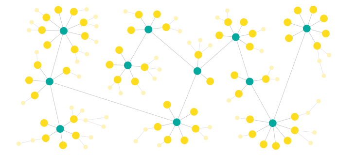
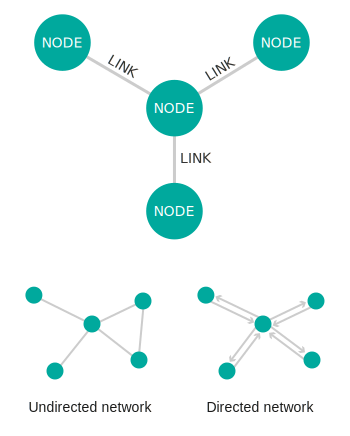

Network Diagram
Everything is interconnected in this world. With the rise of the social networking sites and communication tools, everyone can now witness the importance of relationship and theories such as six degrees of separation. The same is true not just for human relationships but also for business entities.The ability to visualize the relationship between items, the weightage of the relationship and the flow often brings out the untold insights into limelight, which are otherwise not very evident. Simple numbers and basic charts won’t be enough to discover and tell such data stories.We need new visualization techniques for the complex world of relationship and Network Graph thrives to the forefront for such scenarios.
This type of visualisation shows how things are interconnected through the use of nodes / vertices and link lines to represent their connections and help illuminate the type of relationships between a group of entities.Typically, nodes are drawn as little dots or circles, but icons can also be used. Links are usually displayed as simple lines connected between the nodes. However, in some Network Diagrams, not all of the nodes and links are created equally: additional variables can be visualised, for example, by making the node size or link stroke weight proportion to an assigned value.
By mapping out connected systems, Network Diagrams can be used to interpret the structure of a network through looking for any clustering of the nodes, how densely nodes are connected or by how the diagram layout is arranged.The two notable types of Network Diagram are "undirected" and "directed". Undirected Network Diagrams only display the connections between entities, while directed Network Diagrams show if the connections are one-way or two-way through small arrows.